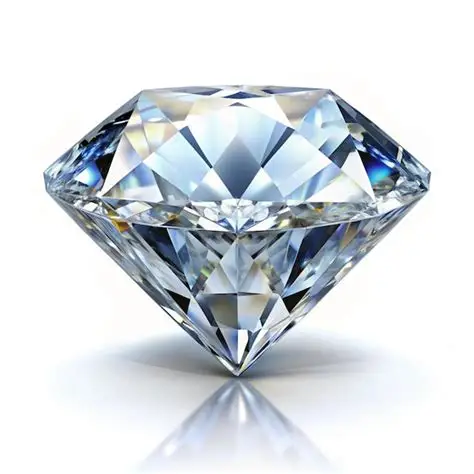
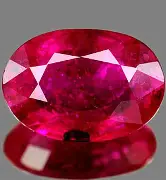

✨ Diamante: A Pedra Mais Valiosa
Publicado em 12 de Agosto, 2026

Você sabia que os diamantes podem ser mais antigos que o próprio Sistema Solar? Alguns diamantes têm cerca de 3,8 bilhões de anos! Além disso, um diamante é tão duro que é o único material natural capaz de arranhar outro diamante. Curiosamente, foram necessários mais de 100 bilhões de anos de pressão e calor para formar cada diamante que existe.
Os diamantes também têm uma propriedade fascinante: eles conduzem o calor melhor do que qualquer outro material natural. Por isso, um teste simples de soprar neles pode identificar falsificações - um diamante real fica nublado por menos tempo que um vidro comum!
🔴 Rubi: A Gema Vermelha
Publicado em 5 de Agosto, 2026

O rubi é na verdade uma variedade vermelha do corundum, o mesmo mineral que forma a safira azul! A cor vermelha intensa vem da presença de cromo na sua estrutura. Rubis de qualidade superior são frequentemente mais caros que diamantes de tamanho equivalente. Um dos rubis mais famosos é o "Esperança de Burmese", que é um das gemas mais valiosas do mundo.
Interessantemente, os rubis também possuem fluorescência - quando expostos à luz ultravioleta, emitem um brilho vermelho fluorescente. Além disso, alguns rubis apresentam o efeito "olho de gato", onde uma faixa de luz brilhante atravessa a pedra quando girada sob uma fonte de luz!
Sobre Este Blog
Bem-vindo ao Jóias & Gemas! Aqui compartilhamos conhecimento sobre as pedras preciosas mais fascinantes do mundo. Explore a geologia, história e beleza de cada gema.
📚 Artigos Populares

Safira Azul

Esmeralda Colombiana

Topázio Imperial
📧 Acompanhe
Inscreva-se para receber novos artigos sobre o mundo das pedras preciosas diretamente em seu email!